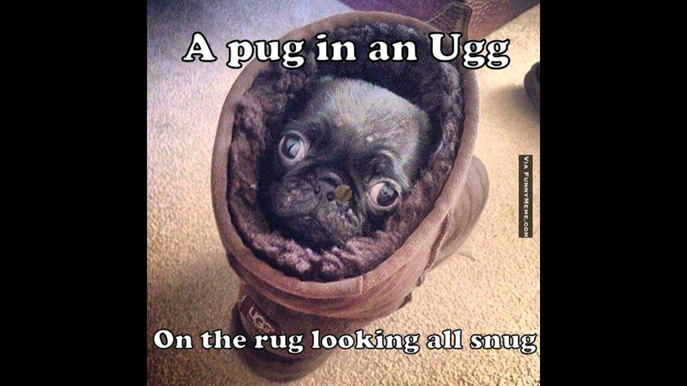
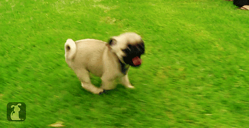
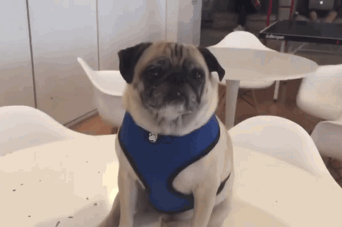
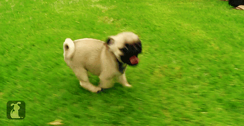
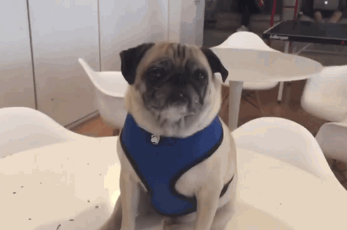
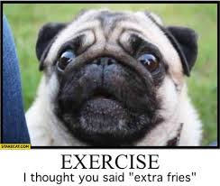
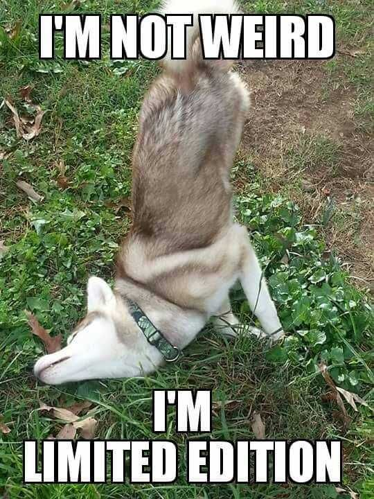

Save A Pugs Life!
Welcome to Haitham and Drakes website!

.jpeg) 



Get your Pug above! Your a hater if you don't!
You like Pugs? Get some Pugs!
This website is not final. Changes will be made almost every 100 years! So check back ALL THE TIME so you can see all the changes!
Be sure to get a pug with the link above! If you don't, your family will be forced to..... either you get one, or we make you! (That was a joke by the way. Dont try to murder us people.)
Here we talk about pugs!
And why you should get one!
We will convince you to get a pug by being funny.
Pugs are a type of dog breed.
If you don't know what pugs look like, they look like this.

Types Of Pugs.
As you can see pugs are very cute.
They come in different colors like black and white, or gray. They can be all colors to.
What Pugs love to do!
As you can see pugs are very cute.
They are very PLAYFUL!
First, once pugs love people, they will play forever!
Second, they also love playing in snow and outside.
Third, they will never stop following their owner unless they're asleep.
Drake: Fourth they love tug of war, fetch, and my pug loves playing a game I made up called hide and seek pug! Where you put Larry, by the way Larry is my pugs name, and get a treat and hide then someone opens the door and he starts looking around the house crying out loud because he wants the treat! He loves the game!
Dont you want a pug now, I mean, LOOK HOW FUNNY THEY ARE!!!
Pug Facts!
Pugs have curly tails and when their tails are down they’re sad or nervous. When it's curly they’re excited or happy. Their face is wrinkly and flat. Also pugs have fat rolls all around their body. When they're confused they tilt their head.
And don't get mad at them if they breathe a lot. Their snouts are very tiny
Pugs can reach 10 to 14 inches in height and 14 to 18 pounds of weight.
A Pug is known as Mop in Germany.
Pugs are poor swimmers. They can easily drown because of its short nasal passages.
Pugs are small dogs with big-dog personality. They cannot be easily trained due to stubborn nature.
Now, lets get some more funny pugs! Haitham: Or dogs in general, I found this picture of a husky and knew that I HAD to put it!


Watch this for an idea of how pugs act!
So, yeah! Hopefully this makes you want to get a pug! If it does, use the link above to adopt one, they are really the best! Also before you go make sure you clicked on both the links even if you don't want an amazing little cute pug, just check it out! Alright Thank you!
This was Haitham and Drake,
and we are signing off!
Credits: Google, ImageConverter.com, and last but not least..... PUGS!!!!